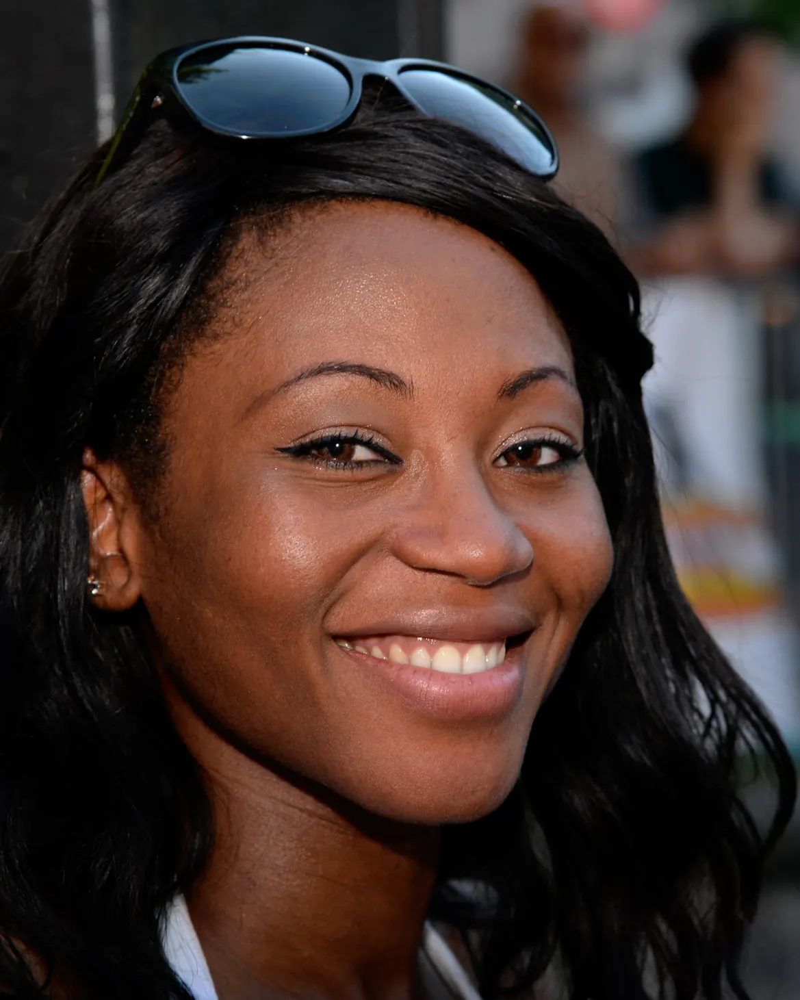
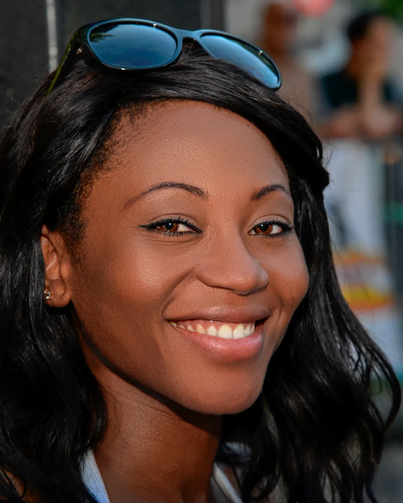
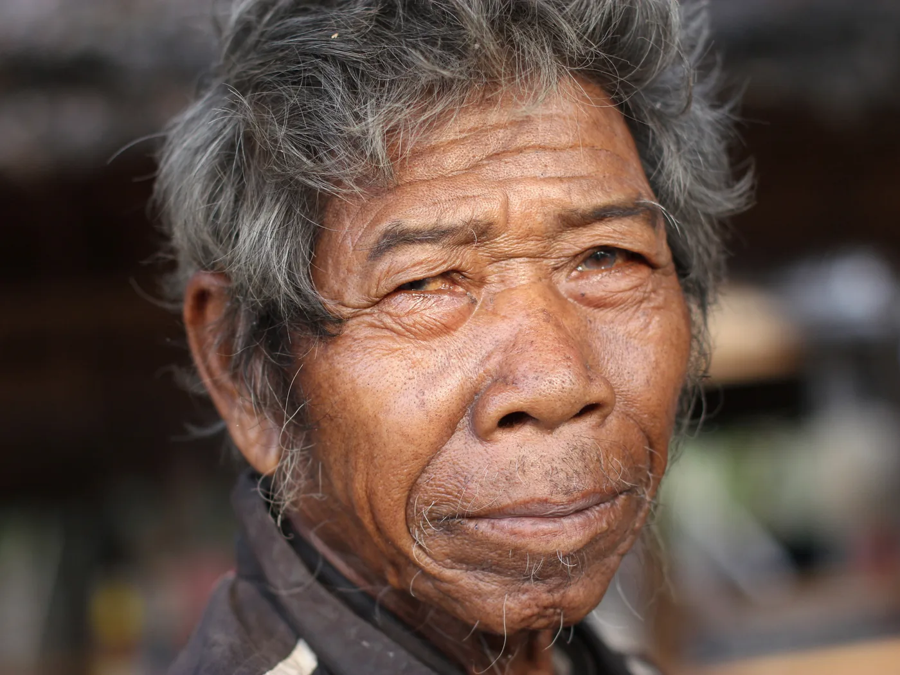
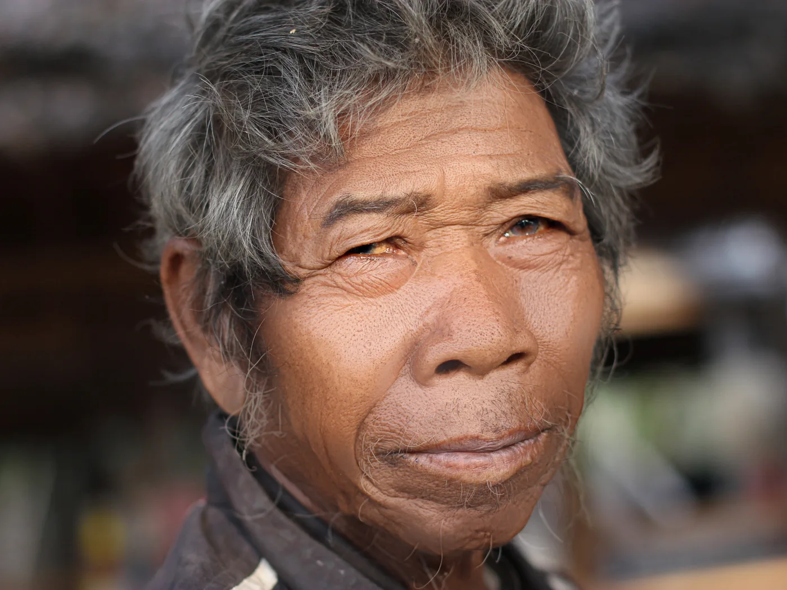
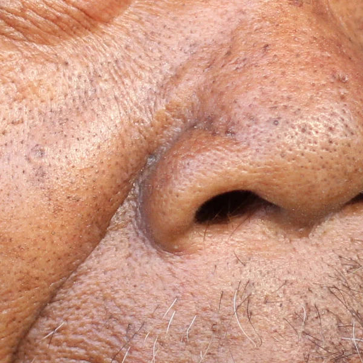
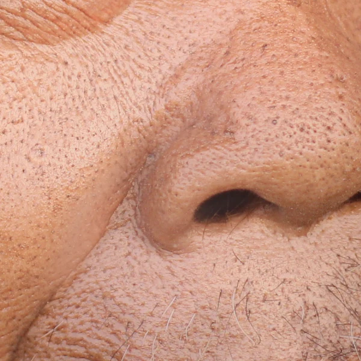
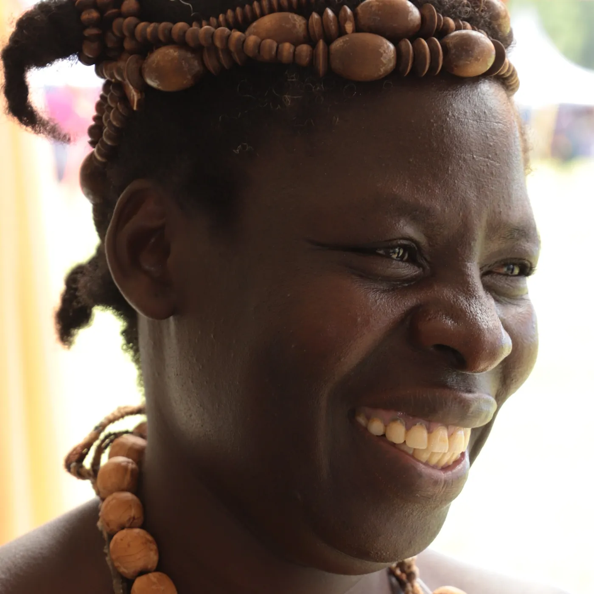
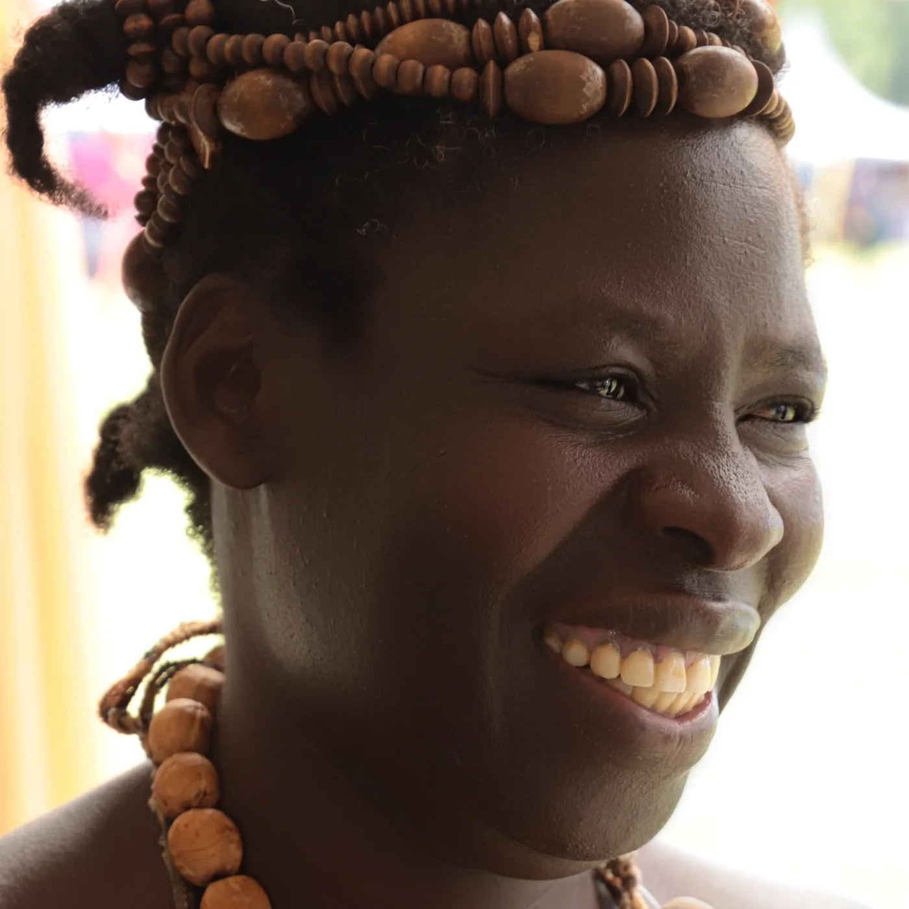

Fade the blemish. Keep the skin.
Free, open-source portrait retouching that runs entirely on your own device. Your photos are never uploaded.


BeforeAfter

BeforeAfterSpots fade. Pores stay.
Retouching works by frequency separation. Colour and light are evened in one layer, while the fine texture sits in another and is only reduced on the blemishes themselves. Skin still looks like skin.


BeforeAfterZoomed in on the same cheek. Large raised spots may not disappear completely, so some marks stay faintly visible. For those, finish by hand.


BeforeAfterDeep skin stays deep.
Retouching doesn’t make anyone lighter. If you can barely tell the two sides apart here, that’s the point. Colour looks are also held back on faces that read as dark, so they keep their own depth.
Toning still corrects exposure. An under-exposed or backlit face can get brighter along with the rest of the photo, and you can pull that back with the brightness control.
Everyone in the photo gets their own setting.
LRCDF recognises the people across a shoot. Choose a level for each of them, including no retouching at all. Here the woman on the left was left alone.
Tonewell does this too on Mac and iPad, not yet on Windows.
Warm colours stay warm.
A look’s orange and yellow skin corrections are applied to skin alone, so warm clothes, props and backgrounds aren’t thinned out with it.
Paint or make-up on skin counts as skin and can soften a little.
Which one is yours?
If your photos already live in Lightroom Classic, use LRCDF. If they don’t, Tonewell does the job on its own.
| LRCDF | Tonewell | |
|---|---|---|
| Runs on | Mac and Windows | Mac, iPad and Windows |
| Lightroom Classic | Required | Not needed |
| Finished photos | A new TIFF stacked above the original in your catalogue | New files saved separately; originals untouched |
| Skin retouching | Yes | Yes |
| Looks and fine tuning | Yes | Yes |
| Face and body shaping | Optional | Optional |
| A level for each person | Yes | Mac and iPad |
| Learns a look from your edits | Yes | No |
| Flags closed eyes and soft focus | Yes | Mac and iPad |
| Tethered shooting | No | iPad only: USB (Sony A7R V) or the camera’s FTP transfer over Wi-Fi. Tested with a Sony A7R V. |
| Interface language | 20 languages | 20 languages |
Pick your device.
Downloads are on the project’s GitHub releases page, where each release lists its files and install steps.
-
Mac with Lightroom ClassicLRCDF
Apple silicon (M1 or later), macOS 14 or newer, 8 GB memory About 1.8 GB. Allow it once in System Settings. Get it -
Windows with Lightroom ClassicLRCDF
Windows 10 or 11, 64-bit, 16 GB memory. NVIDIA build optional. 1.9 GB, or 4.2 GB in three parts for NVIDIA. Installed from PowerShell. Get it -
Mac without LightroomTonewell
Apple silicon or Intel, macOS 14 or newer. Tested on Apple silicon only so far. About 130 MB. Allow it once in System Settings. Get it -
iPadTonewell
iPadOS 27 or newer, plus a Mac or PC to install from About 130 MB. Sideloaded with your own Apple Account. Get it -
Windows without LightroomTonewell
Windows 11, 64-bit. An NVIDIA card makes it faster but isn’t needed. Tested on one PC so far. 3 GB in two files. Extract both into one folder, then run Tonewell. Get it -
Windows, from the Microsoft StoreTonewell
Windows 11, 64-bit. The same Tonewell, installed and kept up to date by the Store. About 3.5 GB. No warning on first launch and nothing to extract. Get it
Worth knowing first.
Free and open source
There is no paid tier and no account. The source code is Apache-2.0. Model weights come with the apps and have their own terms, listed in the repository.
Your photos stay with you
All toning and retouching happens on your device, and no photo is ever uploaded. The apps check for updates, which sends nothing about you and can be switched off. One exception: a Google library inside LRCDF sends usage statistics, without photos, to Google while it looks for faces. Tonewell sends nothing of the kind. The privacy policy has the details.
A spare-time project
This is independent software, not a company’s product, so expect rough edges. If a photo comes out wrong or an install gets stuck, please open an issue.
First launch on a Mac
Tonewell is signed and notarised by Apple: the first time, macOS asks whether you want to open an app downloaded from the internet; click Open. LRCDF isn’t signed, so macOS blocks it the first time: go to System Settings, then Privacy & Security, and choose Open Anyway. You only do this once.
First launch on Windows
The direct downloads aren’t signed for Windows, so Windows may show a warning the first time. LRCDF installs by running the included script in PowerShell. Tonewell needs no installer: extract both downloads into the same folder and run it. No administrator rights are needed. Tonewell from the Microsoft Store shows no warning; LRCDF is not in the Store.
Installing on iPad
Tonewell isn’t on the App Store, so you sideload it. With a free Apple Account it has to be reinstalled every 7 days. The install guide can be handed to an AI assistant to walk you through it.